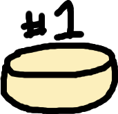

Official Cheese Enthusiast Club Consisting Of Totally Not Rats
First Meeting
July 7th, 2007
Welcome to the OFFICIAL CHEESE ENTHUSIAST CLUB CONSISTING OF TOTALLY NOT RATS. We are a club consisting of non-rats! We do NOT accept rats in this club! Other rodents and species, they're okay.
Response to Recent Allegations
There are allegations of us harboring rats in our club, but we have NO rats in this club. NONE. We just want a place for non-rats to congregate and socialize about cheese. There are ZERO rats in this club.Interested in joining? See if you meet these qualifications:
Attendance List
In order of who showed up:
- Mousse
- Remy the Non-Rat
- Samuel Whiskers
- Templeton
- Rattus
Agenda
The following is the topics we talked about during the first official meeting
Introdutions
We introduced ourselves. We confirmed that none of us were rats.
Favorite cheeses
We discussed our favorite cheeses. The top 3 cheeses were Cheddar, Brie, and Mozzarella.
Future of cheese, the economy, and the impact of global warming on cheese
We agreed that the future of cheese may include nondairy options as there is a growing concern about the impact of dairy farms on our planet. Due to this, dairy cheese may become more expensive in the near future. We are unsure how this will affect the economy as a whole.
Unfinished Discussions from the Forums
As seen in our forums, there was a hot debate on the consumption of cheeses such as casu martzu, also known as maggot cheese. At the meeting, we decided that if one truly desires to consume such a cheese, they should be able to. However, they must understand the risks from eating such a risky cheese.
Future Plans
We need to finish our discussion about the future economy and impact of global warming on cheese. We need to figure out topics and ideas for future events at these meetings. We need to figure out when we shall create the Cheese Terminator
Concerns, Questions, Comments
Remy asked about the how the club identifies a rat. The whole group agreed that Mozzarella was the best cheese. Many questions were asked regarding when the next meet up will be.
Diagrams and Photos shown
Voted Number 1 Cheese
Mozzarella
Schematics of Cheese Terminator

Recorded Audio
Recorded Video
Feedback
Complaints about this club? Please email us at cheese-enthusiast-club@rat.com